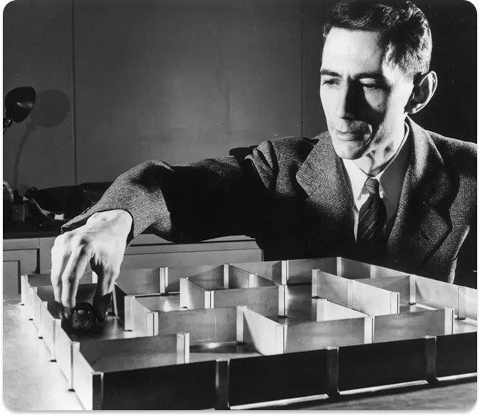

Navegue pelos momentos que definiram a computação moderna.


Explore os eventos mundiais que não foram apenas um pano de fundo, mas a força motriz da revolução tecnológica.


A mente brilhante que lançou os fundamentos da nossa era tecnológica. De seu trabalho que ajudou a encurtar uma guerra à sua exploração sobre a inteligência artificial, seu impacto continua a moldar o nosso mundo.
Claude Shannon foi um matemático e engenheiro americano considerado o pai da Teoria da Informação. Ele desenvolveu os fundamentos da comunicação digital moderna, introduzindo o conceito de bits. Seu trabalho revolucionou áreas como computação, criptografia e telecomunicações.
